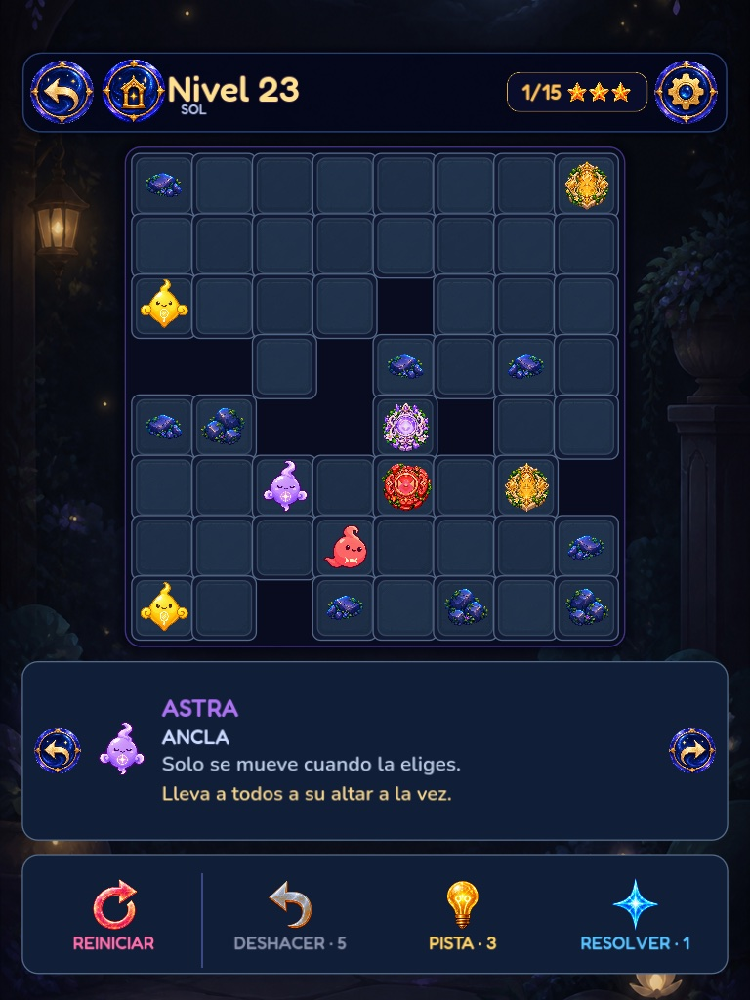
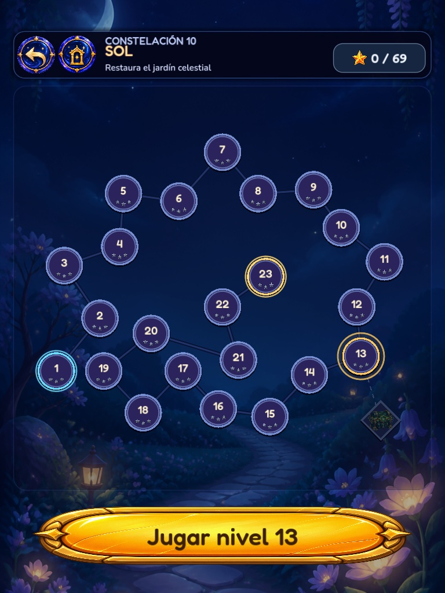
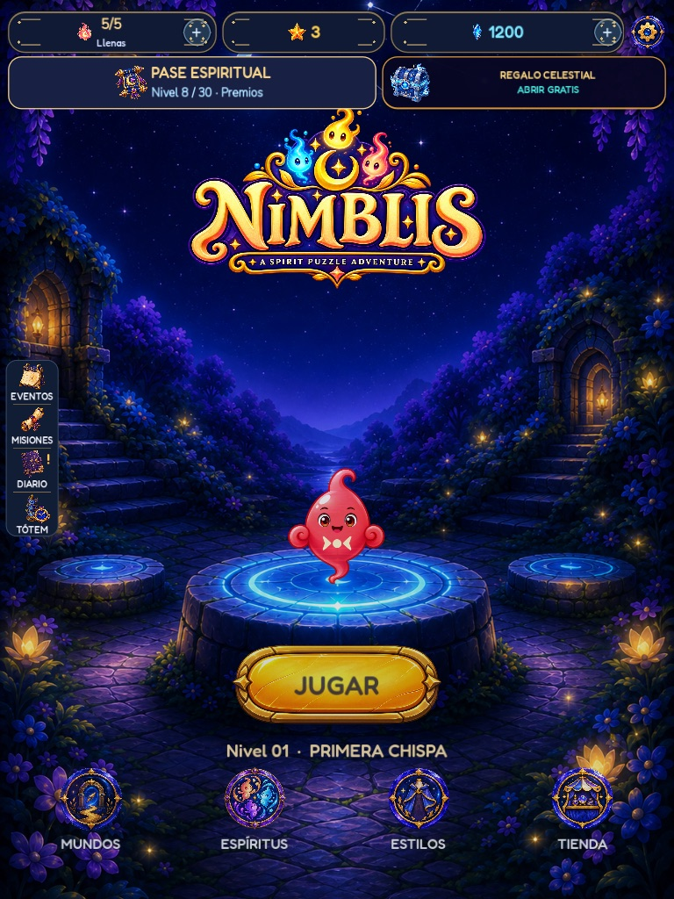
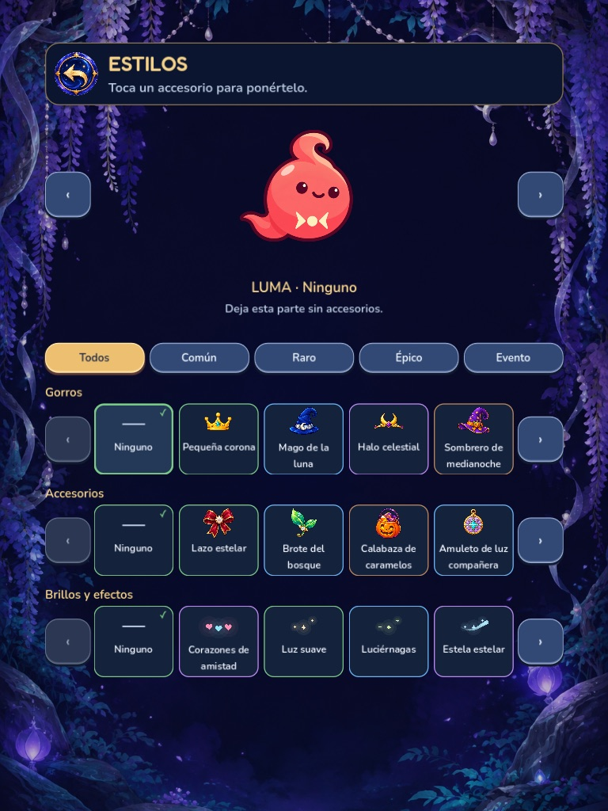
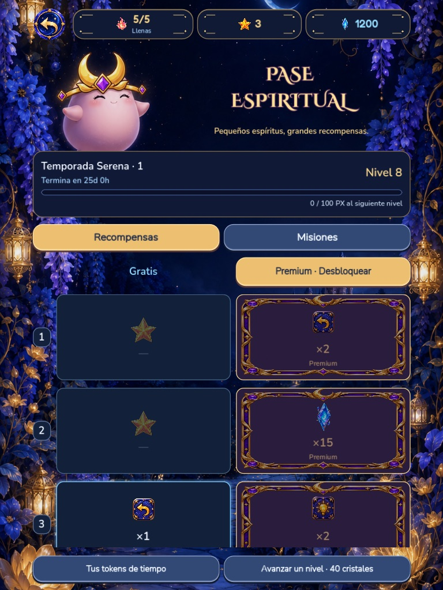

A SPIRIT PUZZLE ADVENTURE
Un movimiento.
Muchas reacciones.
Guía a cada espíritu hasta su altar. Aprende su personalidad, anticipa el tablero y haz que todos lleguen a casa a la vez.
Apple TestFlight Google Play
APRENDE OBSERVANDO
Cada Nimbli cambia el tablero a su manera.
Mueve uno y los demás pueden acercarse, alejarse, copiar la dirección o permanecer inmóviles. La previsualización te enseña cada reacción antes de confirmar.



PIENSA ANTES DE MOVER
Fácil de tocar. Difícil de dominar.
Observa las rutas, prueba una jugada y confirma solo cuando todo encaje. Cada nivel combina personalidades, obstáculos y altares en un pequeño desafío hecho a mano.
- 150 nivelesUna campaña completa en diez constelaciones.
- Tres estrellasResuelve cada puzle con precisión.
- Ayudas opcionalesDeshacer, pistas y solución cuando las necesites.
CONSTELLATION GARDEN
Diez constelaciones. Un jardín por restaurar.
La aventura presenta nuevos Nimblis y reglas paso a paso. Completa rutas, recupera estrellas y descubre desafíos especiales sin perder el ritmo tranquilo del jardín.

MÁS ALLÁ DEL PUZLE
Tu rincón del jardín sigue creciendo.
Personaliza a tus Nimblis, avanza por el Pase Espiritual y participa en eventos y desafíos Tótem.



BETA 0.11.1
El jardín ya está abierto para testers.
Prueba Nimblis en iPhone y iPad mediante TestFlight o en Android mediante Google Play. La beta tiene acceso limitado, así que utiliza los enlaces para entrar o solicitar una invitación.